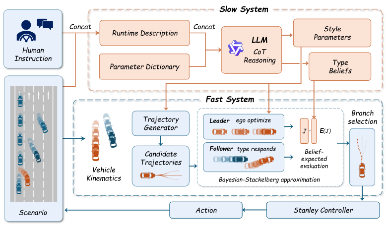
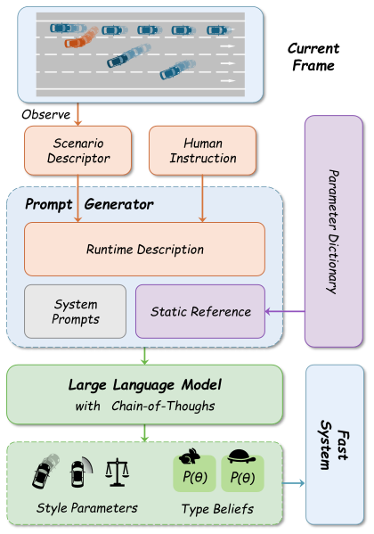
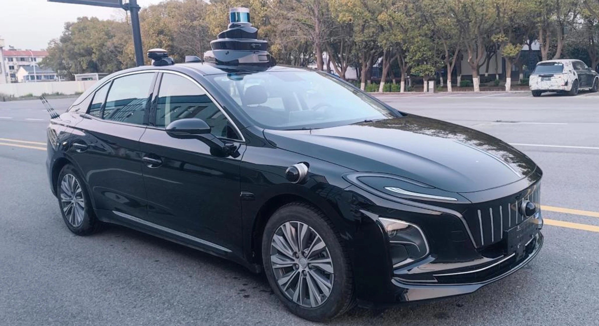
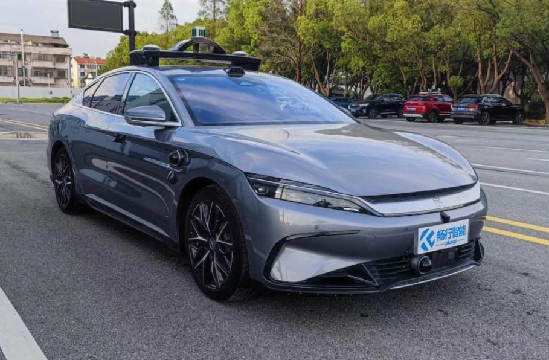

Understand the interaction
Select relevant surrounding vehicles and represent the local driving context together with passenger instructions.
Interactive autonomous driving
An Intention- and Interaction-Driven Fast–Slow Decision-Making System for Autonomous Driving
Bridging passenger intentions and traffic interactions through LLM reasoning and Bayesian–Stackelberg games, with asynchronous coordination between slow reasoning and fast decisions.
The idea
Accommodating passenger preferences while responding to uncertain human driving behavior remains a central challenge. Interaction-driven games model how drivers respond to one another; intention-driven language reasoning interprets passenger requests and observed behavior. LLMGame connects the two through driving-style parameters and probabilistic beliefs over surrounding drivers’ behavioral types.
01 / Method
Slow reasoning supplies context.
Fast optimization turns it into motion.

Select relevant surrounding vehicles and represent the local driving context together with passenger instructions.
The slow system updates probabilities over Yield, Normal, and Force types and maps passenger preferences to bounded driving-style parameters and safety, efficiency, and comfort weights.
The ego vehicle acts as a Stackelberg leader and anticipates type-dependent follower responses. The fast system selects lateral maneuvers and longitudinal acceleration under safety and motion constraints.
Inside the slow system
Scene information, recent motion histories, road context, and the latest passenger instruction form the reasoning input. A structured prompt combines these observations with parameter definitions and driving knowledge.
The LLM returns driving-style parameters and behavioral-type probabilities. These outputs condition the fast system’s evaluation of candidate maneuvers and surrounding-vehicle responses.
Reasoning runs asynchronously, allowing planning and control to continue between updates. Passenger preferences shape the desired behavior; inferred type beliefs shape the anticipated interaction.

02 / Simulation
Multi-scenario comparisons, type-belief ablations,
and responses to changing passenger instructions.
Observe the vehicle’s motion and surrounding traffic in the highway environment.
03 / Quantitative evidence
Dense two-lane cut-in ablation
50 paired, fixed-seed runs per variant
Successful merges Higher is better
Same scenarios, controller, rewards, and action set. The ablation replaces inferred driver-type beliefs with a uniform distribution.
| Measure | LLMGame | Uniform |
|---|---|---|
| Collisions | 0 | 13 |
| Mean merge time | 13.80 s | 19.43 s |
| Mean speed | 6.97 m/s | 6.99 m/s |
increase in merge success
with inferred intent beliefs
Dense-traffic cut-in evaluation over the same 50 random seeds. The uniform-belief variant retains the decision and control pipeline and replaces inferred behavioral-type probabilities with a uniform distribution. The main benefit is more reliable task completion, with nearly identical mean travel speeds.
Intention inference
Vehicle–query samples from the dense-traffic cut-in evaluation. Accuracy is measured over Yield, Normal, and Force types.
| Vehicle group | Samples | Accuracy |
|---|---|---|
| Key vehicles | 523 | 96.9% |
| All vehicles | 1,332 | 70.9% |
| Background vehicles | 809 | 54.0% |
For key vehicles, macro-F1 is 0.960 and the Brier score is 0.158. Mean LLM response latency is 0.97 s; the fast system continues operating between reasoning updates.
04 / Real-vehicle experiments
Tongji Smart Town test site · Shanghai
Interaction with a human-driven vehicle
The trials take place on a two-way, two-lane road in the western area of the test site. The black Hongqi autonomous vehicle (AV) must merge from the inner lane into the outer lane before an intersection, while the silver BYD human-driven vehicle (HV) responds to its merging maneuver.

The ego vehicle executes intention-conditioned lane-changing decisions.

The driver provides yielding and competing responses to the AV’s merge.
The AV approaches the lane boundary at 12 s to convey its merging intention. The HV decelerates at 16 s, revealing a yielding tendency and opening a gap. The AV completes the merge ahead at 20 s.
Full original video · 33 sThe AV approaches the target lane at 9 s. The HV accelerates and closes the gap at 10.4 s, shifting the inferred belief toward a competing response. The AV slows down and completes the merge behind at 16 s.
Full original video · 29 sThese sequences illustrate intention communication through motion and recognition of human responses: observed HV behavior informs the slow system’s inference, and the fast system translates the updated beliefs into speed and lane-change decisions. Both recordings are provided in full. These qualitative field examples are separate from the controlled simulation ablation.
Explore further
The method, evidence, and implementation in one place.